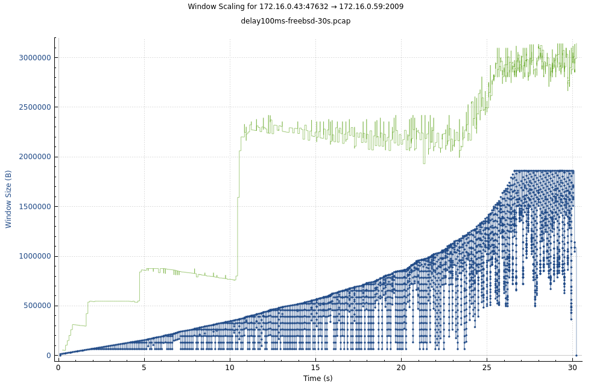

TCP Throughput
TCP Throughput <= Bytes in flight / RTT, where RTT = round-trip time. Max bytes in flight = min(Cwnd, Rwnd, sndbuf, BDP).
TCP trace segment graph
tcptrace is a tool written by Shawn Ostermann at Ohio University, http://tcptrace.org. Wireshark can produce nice interactive graphs.
Here we show FreeBSD's NewReno congestion control, slow start after packet loss.
Mininet
All graphs below are from Linux using CUBIC cc, running under Mininet.
mininet> net
h1 h1-eth0:s1-eth1
h2 h2-eth0:s1-eth2
s1 lo: s1-eth1:h1-eth0 s1-eth2:h2-eth0
Packets are captured at sender side tcpdump -i s1-eth1 -s 128.
mininet> h1 ping -c 4 h2
PING 10.0.0.2 (10.0.0.2) 56(84) bytes of data.
64 bytes from 10.0.0.2: icmp_seq=1 ttl=64 time=0.252 ms
64 bytes from 10.0.0.2: icmp_seq=2 ttl=64 time=0.053 ms
64 bytes from 10.0.0.2: icmp_seq=3 ttl=64 time=0.059 ms
64 bytes from 10.0.0.2: icmp_seq=4 ttl=64 time=0.056 ms
mininet> xterm h2 # then start `iperf3 -s` on h2
mininet> h1 iperf3 -c h2
Connecting to host 10.0.0.2, port 5201
[ 5] local 10.0.0.1 port 37680 connected to 10.0.0.2 port 5201
[ ID] Interval Transfer Bitrate Retr Cwnd
[ 5] 0.00-1.00 sec 8.00 GBytes 68.7 Gbits/sec 0 666 KBytes
[ 5] 1.00-2.00 sec 8.20 GBytes 70.4 Gbits/sec 0 940 KBytes
[ 5] 2.00-3.00 sec 7.89 GBytes 67.7 Gbits/sec 0 1.15 MBytes
[ 5] 3.00-4.00 sec 7.90 GBytes 67.9 Gbits/sec 0 1.28 MBytes
[ 5] 4.00-5.00 sec 7.98 GBytes 68.6 Gbits/sec 0 1.42 MBytes
[ 5] 5.00-6.00 sec 8.16 GBytes 70.1 Gbits/sec 0 1.70 MBytes
[ 5] 6.00-7.00 sec 8.17 GBytes 70.2 Gbits/sec 0 1.70 MBytes
[ 5] 7.00-8.00 sec 8.14 GBytes 69.9 Gbits/sec 0 1.79 MBytes
[ 5] 8.00-9.00 sec 8.04 GBytes 69.0 Gbits/sec 0 1.79 MBytes
[ 5] 9.00-10.00 sec 7.99 GBytes 68.7 Gbits/sec 0 1.88 MBytes
- - - - - - - - - - - - - - - - - - - - - - - - -
[ ID] Interval Transfer Bitrate Retr
[ 5] 0.00-10.00 sec 80.5 GBytes 69.1 Gbits/sec 0 sender
[ 5] 0.00-10.00 sec 80.5 GBytes 69.1 Gbits/sec receiver
iperf Done.
Add 100ms latency using netem delay 100ms.
mininet> s1 tc qdisc replace dev s1-eth2 root netem delay 100ms
mininet> h1 ping -c 4 h2
PING 10.0.0.2 (10.0.0.2) 56(84) bytes of data.
64 bytes from 10.0.0.2: icmp_seq=1 ttl=64 time=101 ms
64 bytes from 10.0.0.2: icmp_seq=2 ttl=64 time=100 ms
64 bytes from 10.0.0.2: icmp_seq=3 ttl=64 time=100 ms
64 bytes from 10.0.0.2: icmp_seq=4 ttl=64 time=100 ms
Slow sender
iperf3 -c server --bitrate 10M
Slow sender using FQ pacing
iperf3 -c server --fq-rate 10M
No bursts.
Slow receiver
iperf3 -s --server-bitrate-limit 10M
Small window size.
Small Rwnd
mininet> h1 bin/tcpperf -c h2
Connected 10.0.0.1:37662 -> 10.0.0.2:2009, congestion control: cubic
Time (s) Throughput Bitrate Cwnd Rwnd sndbuf ssthresh rtt/var
0.000s 0.00kB/s 0.00kbps 14.1Ki 42.4Ki 85.3Ki 2048Mi 201.2ms/100593
1.048s 21.0MB/s 168Mbps 10.5Mi 6094Ki 16.0Mi 2048Mi 100.2ms/56 retrans=3
2.050s 65.2MB/s 522Mbps 16.5Mi 6518Ki 16.0Mi 2048Mi 100.4ms/107
3.054s 66.6MB/s 533Mbps 16.5Mi 6546Ki 16.0Mi 2048Mi 100.4ms/80
4.058s 66.7MB/s 534Mbps 16.5Mi 6520Ki 16.0Mi 2048Mi 100.5ms/61
5.063s 66.7MB/s 533Mbps 16.5Mi 6546Ki 16.0Mi 2048Mi 100.5ms/80
6.066s 66.8MB/s 534Mbps 16.5Mi 6520Ki 16.0Mi 2048Mi 100.4ms/81
7.070s 66.6MB/s 533Mbps 16.5Mi 6546Ki 16.0Mi 2048Mi 100.4ms/69
8.074s 66.8MB/s 534Mbps 16.5Mi 6520Ki 16.0Mi 2048Mi 100.4ms/68
9.077s 66.9MB/s 535Mbps 16.5Mi 6552Ki 16.0Mi 2048Mi 100.3ms/77
10.081s 66.7MB/s 534Mbps 16.5Mi 6548Ki 16.0Mi 2048Mi 100.4ms/115
Transferred 623MBytes in 10.238s, 4754 syscalls, 131072.0 Bytes/syscall
Throughput is limited by Rwnd (snd_wnd), 100ms * 66.7MB/s = 6.5MB.
Window is filled up as soon as advertised.
Set larger tcp_rmem on receiver, for larger Rwnd.
mininet> h2 sysctl -A |grep tcp_.mem
net.ipv4.tcp_rmem = 10240 87380 16777216
net.ipv4.tcp_wmem = 10240 87380 16777216
mininet> h2 sysctl -A |grep tcp_adv
net.ipv4.tcp_adv_win_scale = 1
mininet> h2 sysctl -w net.ipv4.tcp_rmem="10240 131072 65536000"
net.ipv4.tcp_rmem = 10240 131072 65536000
For net.ipv4.tcp_adv_win_scale = 1, Rwnd = tcp_rmem[2] / 2 = 32MB.
Small sndbuf
mininet> h1 bin/tcpperf -c h2
Connected 10.0.0.1:45092 -> 10.0.0.2:2009, congestion control: cubic
Time (s) Throughput Bitrate Cwnd Rwnd sndbuf ssthresh rtt/var
0.000s 0.00kB/s 0.00kbps 14.1Ki 42.4Ki 85.3Ki 2048Mi 100.7ms/50326
1.045s 18.3MB/s 147Mbps 10.2Mi 8474Ki 16.0Mi 2048Mi 103.6ms/6137 retrans=2
2.034s 148MB/s 1184Mbps 31.4Mi 31.2Mi 16.0Mi 2048Mi 100.0ms/20
3.014s 159MB/s 1272Mbps 31.4Mi 31.2Mi 16.0Mi 2048Mi 100.0ms/1
4.005s 157MB/s 1255Mbps 31.4Mi 31.2Mi 16.0Mi 2048Mi 100.0ms/5
5.042s 158MB/s 1264Mbps 31.4Mi 31.2Mi 16.0Mi 2048Mi 100.0ms/16
6.020s 159MB/s 1275Mbps 31.4Mi 31.2Mi 16.0Mi 2048Mi 100.0ms/15
7.016s 154MB/s 1229Mbps 31.4Mi 31.2Mi 16.0Mi 2048Mi 100.0ms/2
8.055s 158MB/s 1261Mbps 31.4Mi 31.2Mi 16.0Mi 2048Mi 100.0ms/0
9.019s 164MB/s 1314Mbps 31.4Mi 31.2Mi 16.0Mi 2048Mi 100.0ms/15
10.034s 151MB/s 1206Mbps 31.4Mi 31.2Mi 16.0Mi 2048Mi 100.0ms/14
Transferred 1425MBytes in 10.134s, 10869 syscalls, 131072.0 Bytes/syscall
Throughput is limited by sndbuf, 100ms * 160MB/s = 16MB.
Rwnd is only half filled, in a burst.
Higher throughput achived by larger sndbuf.
mininet> h1 sysctl -w net.ipv4.tcp_wmem="10240 131072 65536000"
net.ipv4.tcp_wmem = 10240 131072 65536000
mininet> h1 bin/tcpperf -c h2
Connected 10.0.0.1:53176 -> 10.0.0.2:2009, congestion control: cubic
Time (s) Throughput Bitrate Cwnd Rwnd sndbuf ssthresh rtt/var
0.000s 0.00kB/s 0.00kbps 14.1Ki 42.4Ki 128Ki 2048Mi 100.4ms/50205
1.004s 32.1MB/s 257Mbps 7767Ki 11.0Mi 37.8Mi 2048Mi 100.5ms/47
2.051s 249MB/s 1995Mbps 68.3Mi 24.9Mi 62.5Mi 2048Mi 100.7ms/134 retrans=585
3.056s 260MB/s 2081Mbps 68.3Mi 24.9Mi 62.5Mi 2048Mi 100.6ms/147
4.061s 260MB/s 2082Mbps 68.3Mi 21.9Mi 62.5Mi 2048Mi 100.5ms/23
5.024s 274MB/s 2194Mbps 68.3Mi 24.3Mi 62.5Mi 2048Mi 100.2ms/64
6.028s 313MB/s 2500Mbps 68.3Mi 26.4Mi 62.5Mi 2048Mi 100.1ms/58
7.034s 325MB/s 2603Mbps 68.3Mi 29.6Mi 62.5Mi 2048Mi 100.1ms/73
8.040s 325MB/s 2602Mbps 68.3Mi 28.9Mi 62.5Mi 2048Mi 100.1ms/40
9.046s 326MB/s 2604Mbps 68.3Mi 29.7Mi 62.5Mi 2048Mi 100.2ms/112
10.051s 325MB/s 2603Mbps 68.3Mi 27.9Mi 62.5Mi 2048Mi 100.1ms/100
Transferred 2703MBytes in 10.154s, 20625 syscalls, 131072.0 Bytes/syscall
Small Cwnd
Congestion control algorithms decide congestion window (Cwnd).
With RTT = 100ms, FreeBSD newreno CC sometimes increases Cwnd slowly.

In the following example, reaches max bandwidth after ~30 seconds.
freebsd:~/recipes/tpc % bin/tcpperf -c 172.16.0.59 -b 100G -t 30
Connected 172.16.0.77:31839 -> 172.16.0.59:2009, congestion control: newreno
Time (s) Throughput Bitrate Cwnd Rwnd sndbuf ssthresh rtt/var
0.000s 0.00kB/s 0.00kbps 14.1Ki 63.6Ki 32.8Ki 1024Mi 202.0ms/101000
1.104s 356kB/s 2849kbps 45.5Ki 435Ki 96.8Ki 1024Mi 123.8ms/42562
2.007s 580kB/s 4643kbps 71.2Ki 589Ki 137Ki 1024Mi 107.5ms/13937
3.010s 915kB/s 7318kbps 99.7Ki 593Ki 201Ki 1024Mi 102.3ms/3750
4.014s 1176kB/s 9404kbps 128Ki 593Ki 257Ki 1024Mi 100.9ms/1187
5.017s 1437kB/s 11.5Mbps 162Ki 1307Ki 321Ki 1024Mi 100.5ms/687
6.021s 1829kB/s 14.6Mbps 191Ki 1307Ki 377Ki 1024Mi 100.4ms/562
7.024s 2090kB/s 16.7Mbps 219Ki 1287Ki 441Ki 1024Mi 100.4ms/687
8.028s 2481kB/s 19.9Mbps 248Ki 1266Ki 497Ki 1024Mi 100.5ms/687
9.032s 2611kB/s 20.9Mbps 276Ki 1246Ki 553Ki 1024Mi 100.5ms/750
10.035s 3005kB/s 24.0Mbps 311Ki 1820Ki 617Ki 1024Mi 100.4ms/500
11.038s 3396kB/s 27.2Mbps 339Ki 1894Ki 681Ki 1024Mi 100.4ms/500
12.042s 3526kB/s 28.2Mbps 368Ki 1919Ki 737Ki 1024Mi 100.5ms/625
13.047s 4045kB/s 32.4Mbps 418Ki 1852Ki 857Ki 1024Mi 101.2ms/1375
14.050s 4701kB/s 37.6Mbps 480Ki 1868Ki 1009Ki 1024Mi 100.4ms/562
15.054s 5354kB/s 42.8Mbps 553Ki 2361Ki 1169Ki 1024Mi 101.3ms/2000
16.039s 6255kB/s 50.0Mbps 641Ki 2681Ki 1377Ki 1024Mi 100.6ms/687
17.002s 7212kB/s 57.7Mbps 727Ki 2696Ki 1561Ki 1024Mi 102.2ms/4062
18.006s 8098kB/s 64.8Mbps 813Ki 2684Ki 1769Ki 1024Mi 100.7ms/687
19.010s 8617kB/s 68.9Mbps 898Ki 2663Ki 1817Ki 1024Mi 100.5ms/625
20.013s 9662kB/s 77.3Mbps 1004Ki 2914Ki 1817Ki 1024Mi 100.4ms/500
21.017s 10.7MB/s 85.7Mbps 1118Ki 2893Ki 1817Ki 1024Mi 100.4ms/500
22.021s 11.9MB/s 95.0Mbps 1235Ki 3010Ki 1817Ki 1024Mi 100.4ms/500
23.025s 13.2MB/s 106Mbps 1369Ki 2989Ki 1817Ki 1024Mi 100.3ms/437
24.029s 14.5MB/s 116Mbps 1497Ki 2916Ki 1817Ki 1024Mi 100.5ms/687
25.033s 15.9MB/s 127Mbps 1634Ki 2930Ki 1817Ki 1024Mi 100.3ms/437
26.037s 17.2MB/s 138Mbps 1796Ki 3030Ki 1817Ki 1024Mi 100.4ms/562
27.001s 18.2MB/s 146Mbps 2010Ki 3066Ki 1817Ki 1024Mi 100.8ms/687
28.005s 18.5MB/s 148Mbps 2191Ki 3026Ki 1817Ki 1024Mi 100.7ms/687
29.008s 18.4MB/s 147Mbps 2419Ki 2986Ki 1817Ki 1024Mi 100.4ms/562
30.012s 18.5MB/s 148Mbps 2619Ki 2992Ki 1817Ki 1024Mi 100.7ms/625
Transferred 234MBytes in 30.113s, 1787 syscalls, 131072.0 Bytes/syscall
Before Cwnd reaches sndbuf (1.8MB), throughput is dominated by Cwnd. e.g. at 20-th second: Cwnd = 1000K, throughput = 1000K / 0.1s = 10MB/s.
After that, throughput is domnated by sndbuf in this case. e.g. at 30-th second, sndbuf = 1.8MB, throughput = 18MB/s.
See discussion on freebsd-net mailing list 2023-05: https://lists.freebsd.org/archives/freebsd-net/2023-May/003282.html and Slow Start
Bandwidth limit
mininet> s1 tc qdisc replace dev s1-eth2 root netem delay 10ms rate 10Mbit
mininet> h1 bin/tcpperf -c h2
Connected 10.0.0.1:48982 -> 10.0.0.2:2009, congestion control: cubic
Time (s) Throughput Bitrate Cwnd Rwnd sndbuf ssthresh rtt/var
0.000s 0.00kB/s 0.00kbps 14.1Ki 42.4Ki 128Ki 2048Mi 10.7ms/5341
1.120s 1638kB/s 13.1Mbps 132Ki 323Ki 790Ki 70.7Ki 106.2ms/574
2.094s 1481kB/s 11.8Mbps 189Ki 416Ki 1139Ki 70.7Ki 152.8ms/1331
3.018s 1418kB/s 11.3Mbps 243Ki 535Ki 1462Ki 70.7Ki 196.7ms/1030
4.226s 1411kB/s 11.3Mbps 314Ki 680Ki 1887Ki 70.7Ki 254.5ms/1929
5.196s 1351kB/s 10.8Mbps 370Ki 795Ki 2227Ki 70.7Ki 300.2ms/813
6.357s 1354kB/s 10.8Mbps 438Ki 955Ki 2635Ki 70.7Ki 355.6ms/856
7.009s 1408kB/s 11.3Mbps 475Ki 1021Ki 2856Ki 70.7Ki 386.2ms/374
8.444s 1461kB/s 11.7Mbps 560Ki 1213Ki 3366Ki 70.7Ki 455.5ms/1334
9.281s 1409kB/s 11.3Mbps 608Ki 1326Ki 3655Ki 70.7Ki 494.9ms/801
10.160s 1342kB/s 10.7Mbps 660Ki 1399Ki 3970Ki 70.7Ki 537.0ms/1078
Transferred 14.5MBytes in 12.180s, 111 syscalls, 131072.0 Bytes/syscall
This is probably the best case, as all availabe bandwidth is utilized.
Performance
According to Understanding Host Network Stack Overheads SIGCOMM'21, modern Linux network stack can achieve ~42Gbps throughput-per-core. In other words, a single TCP connection can sustain a 40Gbps NIC unidirectionally, but not an 100Gbps NIC.
Eric reported 170Gbps single flow on 200Gbps NIC in netdev conf 2022-10, with receiver zero copy and BIG TCP.